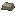

Tin Ingot
Generated: 2026-07-15
Itempage. Current status:complete.

| Field | Value |
|---|---|
| ID | tin_ingot |
| Page type | Item |
| Current status | complete |
| Storage | stockpile |
| Player-facing? | Yes |
| Description | Smelted at the furnace. Alloys into bronze. |
| Status explanation | A live source and a live downstream use both exist. |
| Image path | art/generated/items/tin_ingot.png |
| Fallback / placeholder | Generated 16x16 swatch via BlockRegistry.item_icon() if the canonical item icon is absent. |
Summary
Tin Ingot is a live item with both acquisition and active use in the current build.
Acquisition
| Source type | Source | Quantity / chance | Notes |
|---|---|---|---|
| Recipe output | Smelt Tin | 1x at Furnace | Output route: stockpile. |
Current Uses
| Use type | Use | Quantity | Notes |
|---|---|---|---|
| Recipe input | Alloy Bronze | 1x at Furnace | Live crafting dependency. |
Related Pages
Notes
- No additional manual notes.